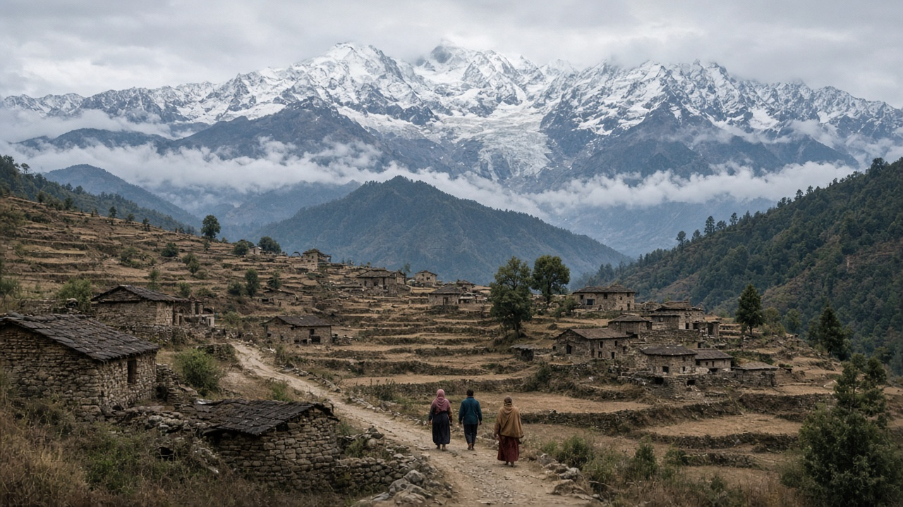
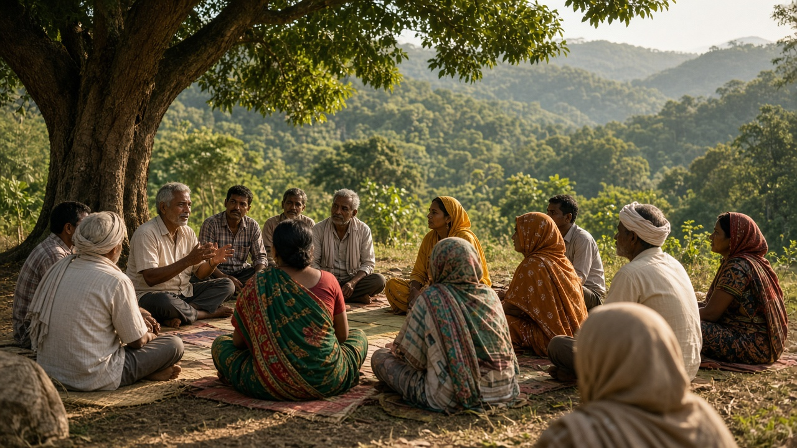
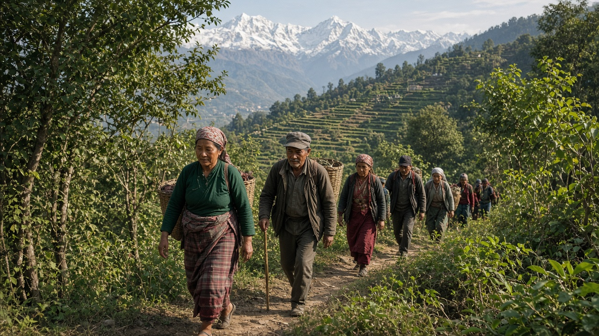

Climate Justice & Equity
Published on July 21, 2026

Climate justice addresses the ethical dimensions of climate change: who causes emissions, who suffers most from impacts, and who has access to resources for mitigation and adaptation. Historically, industrialized nations accumulated wealth partly through fossil fuel use that loaded the atmosphere with greenhouse gases, while many low-emission countries now face disproportionate vulnerability to droughts, floods, glacier loss, and food insecurity. Climate justice frameworks argue that fair solutions must account for these inequalities rather than treating all nations and communities as equally responsible or equally capable of responding.
Equity also operates within countries. Marginalized groups—including low-income households, indigenous peoples, women, disabled persons, and rural communities—often lack political voice, land tenure security, and financial buffers when climate shocks occur. Adaptation and mitigation projects can unintentionally deepen inequality if they prioritize urban elites, exclude local knowledge, or relocate communities without consent and compensation. Intersectional approaches ensure climate policy considers gender, caste, ethnicity, and geography alongside carbon accounting. Legal frameworks that guarantee consultation and remedy strengthen trust and improve outcomes for those most affected.
Practical expressions of climate justice include climate finance from wealthy nations to support developing countries, loss and damage funding, technology transfer on fair terms, and participatory decision making at community level. Youth climate movements, environmental human rights litigation, and indigenous land stewardship advocacy have pushed justice onto mainstream agendas. Education and media coverage that highlight unequal impacts help build public support for fairer solutions. Achieving climate goals without addressing equity risks political backlash and moral failure. A just transition means not only cleaner energy but also fair sharing of costs, benefits, and voice in shaping the low-carbon future that all societies must navigate together.

जलवायु न्यायले जलवायु परिवर्तनका नैतिक पक्षहरू सम्बोधन गर्छ: उत्सर्जन कसले गर्छ, प्रभावबाट कसले सबैभन्दा बढी पीडित हुन्छ, र शमन तथा अनुकूलनका स्रोतहरूमा कसको पहुँच छ। ऐतिहासिक रूपमा, औद्योगिक राष्ट्रहरूले जीवाश्म इन्धन प्रयोगमार्फत धेरै सम्पत्ति जुटाए, जसले वातावरणमा ग्रीनहाउस ग्यासहरू भर्यो, जबकि कम उत्सर्जन गर्ने धेरै देशहरू अहिले खडेरी, बाढी, हिमनदीको ह्रास र खाद्य असुरक्षाको असमानुपातिक जोखिममा छन्। जलवायु न्यायका ढाँचाहरूले निष्पक्ष समाधानले यी असमानताहरूलाई ध्यानमा राख्नुपर्छ भन्छन्, सबै राष्ट्र र समुदायलाई समान रूपमा जिम्मेवार वा समान रूपमा प्रतिक्रिया गर्न सक्षम मान्नु हुँदैन।
समता देशभित्र पनि कार्य गर्छ। हाशिएका समूहहरू—कम आमदनी भएका परिवार, आदिवासी जनजाति, महिला, अपाङ्गता भएका व्यक्ति र ग्रामीण समुदाय—प्रायः जलवायु आघात हुँदा राजनीतिक आवाज, जमिनको सुरक्षा र वित्तीय सहारा बिना हुन्छन्। अनुकूलन र शमन परियोजनाहरूले शहरी शक्तिशाली वर्गलाई प्राथमिकता दिए, स्थानीय ज्ञान बहिष्कार गरे वा सहमति र क्षतिपूर्ति बिना समुदाय स्थानान्तरण गरे भने असजगताले असमानता बढाउन सक्छ। प्रतिच्छेदी दृष्टिकोणले जलवायु नीतिले कार्बन लेखांकनसँगै लिङ्ग, जात, जातीयता र भूगोललाई पनि विचार गर्ने सुनिश्चित गर्छ। परामर्श र उपचारको ग्यारेन्टी गर्ने कानुनी ढाँचाले विश्वास मजबुत बनाउँछ र सबैभन्दा प्रभावितहरूका लागि नतिजा सुधार गर्छ।
जलवायु न्यायका व्यावहारिक अभिव्यक्तिहरूमा विकसित देशहरूबाट विकासशील देशहरूलाई सहयोग गर्ने जलवायु वित्त, हानि र क्षतिको कोष, निष्पक्ष सर्तमा प्रविधि हस्तान्तरण र समुदाय स्तरमा सहभागितामूलक निर्णय समावेश छन्। युवा जलवायु आन्दोलन, वातावरणीय मानव अधिकार मुद्दा र आदिवासी भूमि संरक्षण वकालतले न्यायलाई मुख्यधाराको एजेन्डामा पुर्याएका छन्। असमान प्रभावहरू उजागर गर्ने शिक्षा र मिडिया कवरेजले निष्पक्ष समाधानका लागि जनसमर्थन बढाउन मद्दत गर्छ। समता सम्बोधन नगरी जलवायु लक्ष्य हासिल गर्नाले राजनीतिक प्रतिक्रिया र नैतिक असफलताको जोखिम हुन्छ। न्यायपूर्ण संक्रमणको अर्थ केवल स्वच्छ ऊर्जा मात्र होइन, बरु लागत, लाभ र स्वरको निष्पक्ष बाँडफाँड पनि हो, जसले सबै समाजहरूले मिलेर न्यून-कार्बन भविष्यतर्फ अघि बढ्नुपर्छ।

जलवायु न्याय जलवायु परिवर्तन के नैतिक पहलुओं को संबोधन करता है: उत्सर्जन कौन करता है, प्रभावों से सबसे अधिक कौन पीड़ित होता है, और शमन तथा अनुकूलन के संसाधनों तक किसकी पहुँच है। ऐतिहासिक रूप से, औद्योगिक देशों ने जीवाश्म ईंधन के उपयोग से धन संचय किया, जिससे वायुमंडल में ग्रीनहाउस गैसें बढ़ीं, जबकि कम उत्सर्जन वाले कई देश अब सूखे, बाढ़, ग्लेशियर हानि और खाद्य असुरक्षा के असमान जोखिम का सामना कर रहे हैं। जलवायु न्याय के ढाँचे तर्क देते हैं कि निष्पक्ष समाधानों को इन असमानताओं को ध्यान में रखना चाहिए, न कि सभी राष्ट्रों और समुदायों को समान रूप से जिम्मेदार या समान रूप से प्रतिक्रिया करने में सक्षम मानना चाहिए।
समानता देशों के भीतर भी कार्य करती है। हाशिए हुए समूह—निम्न आय वाले परिवार, आदिवासी, महिलाएँ, विकलांग व्यक्ति और ग्रामीण समुदाय—अक्सर जलवायु आघात होने पर राजनीतिक आवाज, भूमि अधिकार की सुरक्षा और वित्तीय सहारे से वंचित रहते हैं। अनुकूलन और शमन परियोजनाएँ अनजाने में असमानता बढ़ा सकती हैं यदि वे शहरी शक्तिशाली वर्ग को प्राथमिकता दें, स्थानीय ज्ञान को बाहर रखें, या सहमति और मुआवजे के बिना समुदायों का स्थानांतरण करें। प्रतिच्छेदी दृष्टिकोण सुनिश्चित करते हैं कि जलवायु नीति कार्बन लेखांकन के साथ-साथ लिंग, जात, जातीयता और भूगोल पर भी विचार करे। परामर्श और उपचार की गारंटी देने वाले कानूनी ढाँचे विश्वास मजबूत करते हैं और सबसे अधिक प्रभावित लोगों के लिए परिणाम सुधारते हैं।
जलवायु न्याय की व्यावहारिक अभिव्यक्तियों में धनी राष्ट्रों से विकासशील देशों को सहायता के लिए जलवायु वित्त, हानि और क्षति कोष, निष्पक्ष शर्तों पर प्रौद्योगिकी हस्तांतरण, और समुदाय स्तर पर सहभागितापूर्ण निर्णय शामिल हैं। युवा जलवायु आंदोलन, पर्यावरणीय मानव अधिकार मुकदमेबाजी, और आदिवासी भूमि संरक्षण वकालत ने न्याय को मुख्यधारा के एजेंडे पर लाया है। असमान प्रभावों को उजागर करने वाली शिक्षा और मीडिया कवरेज निष्पक्ष समाधानों के लिए जनसमर्थन बनाने में मदद करती है। समानता को संबोधित किए बिना जलवायु लक्ष्य हासिल करने से राजनीतिक प्रतिक्रिया और नैतिक विफलता का जोखिम होता है। न्यायपूर्ण संक्रमण का अर्थ केवल स्वच्छ ऊर्जा नहीं, बल्कि लागत, लाभ और आवाज़ के निष्पक्ष बंटवारे का भी अर्थ है, जिससे सभी समाज मिलकर निम्न-कार्बन भविष्य की दिशा तय करें।